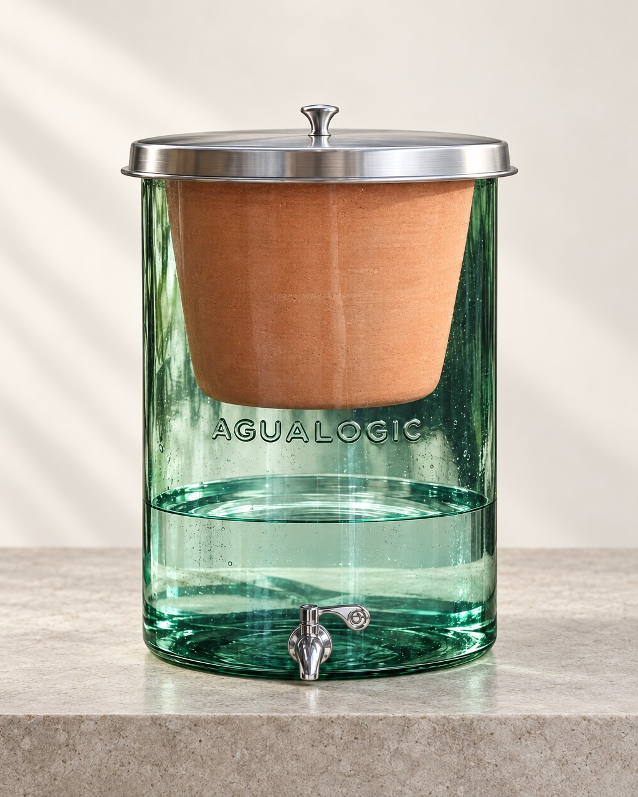

Garantía AguaLogic en tu purificador de vidrio
Rinde menos de 1,5 L/h o el agua sale con sabor, olor o color raro. No cuenta el sabor a arcilla inicial.
Fallas de funcionamiento, ruptura espontánea del recipiente o fugas.
Fallas de funcionamiento, goteo o fuga de agua.

Condiciones de garantía de AguaLogic. Pureza Natural, distribuidor autorizado, gestiona los casos ante AguaLogic. La cerámica dura 2 años con buen manejo; la garantía cubre sus primeros 4 meses.